mobile: stage looking back

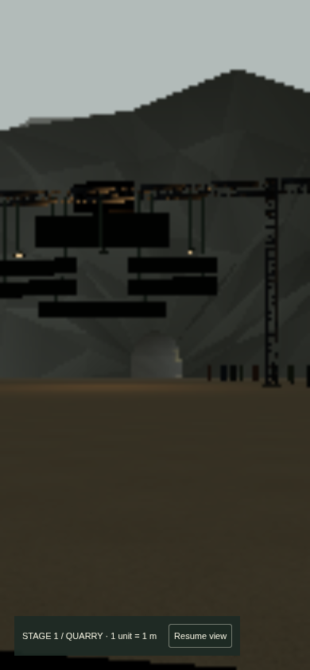
Actual website captures at matched diagnostic poses. Desktop 1366×900 and portrait 390×844; FOV58, requested DPR .25. SwiftShader software renderer; portrait views are emulation.
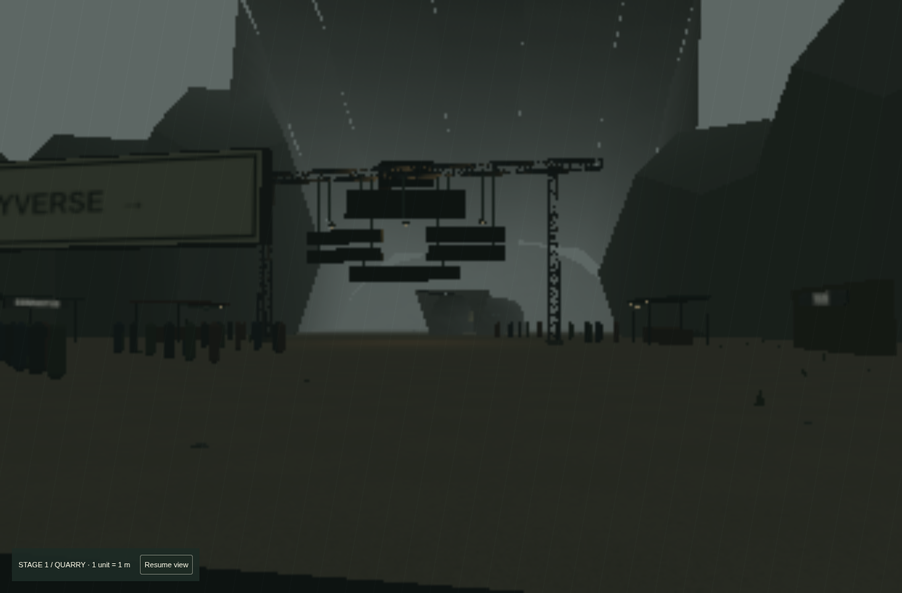
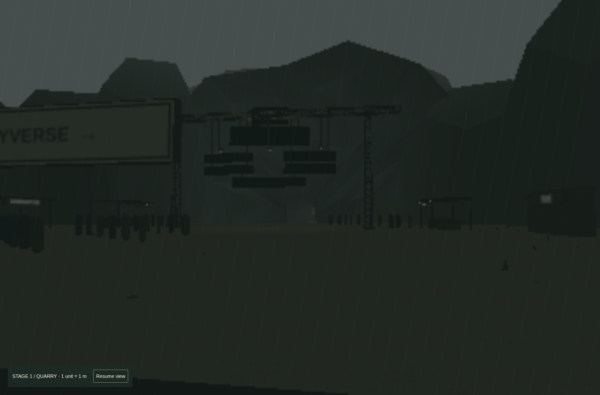
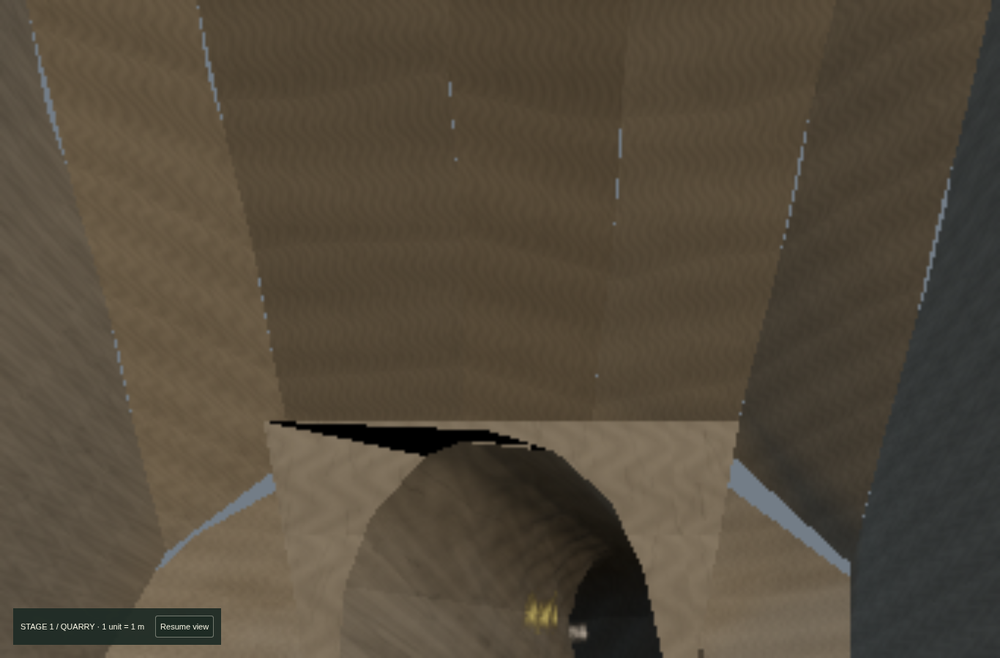
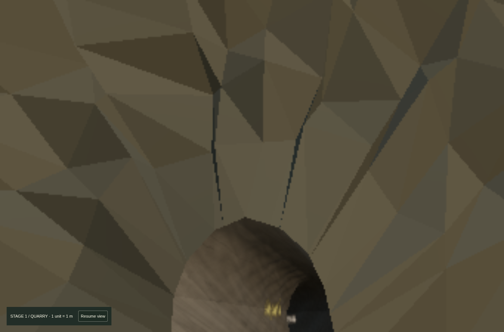
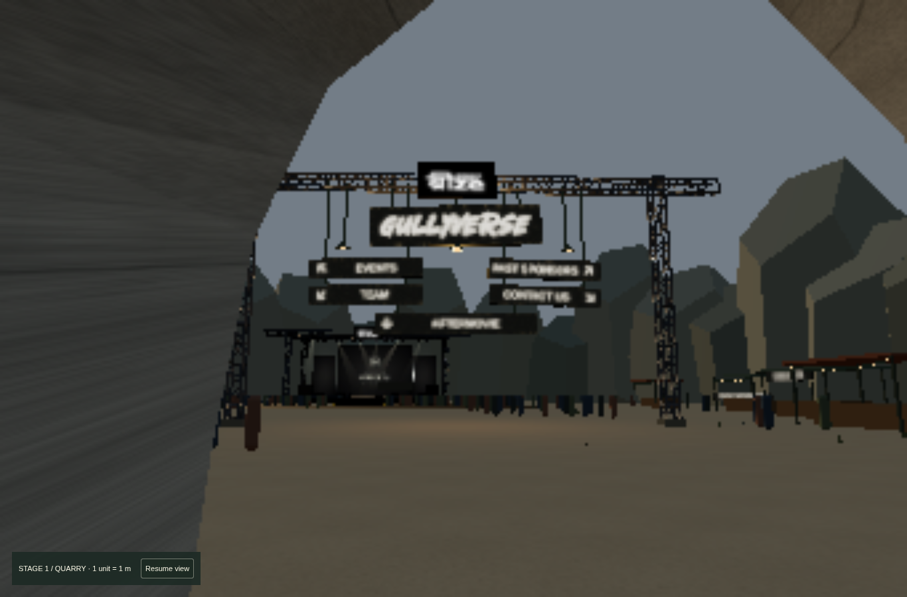
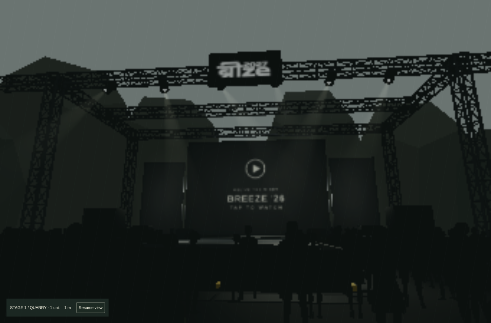
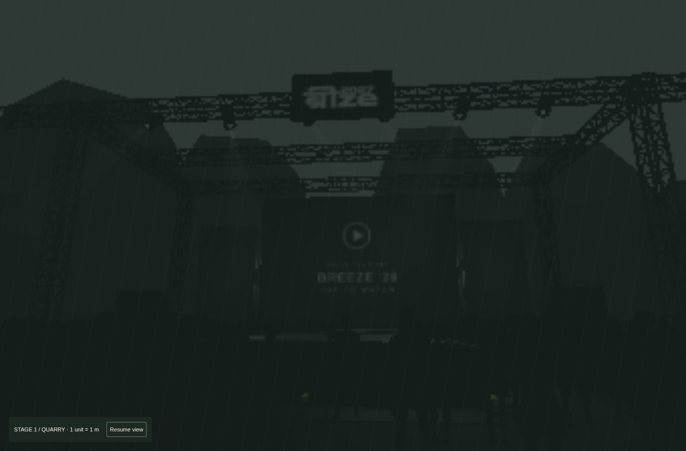

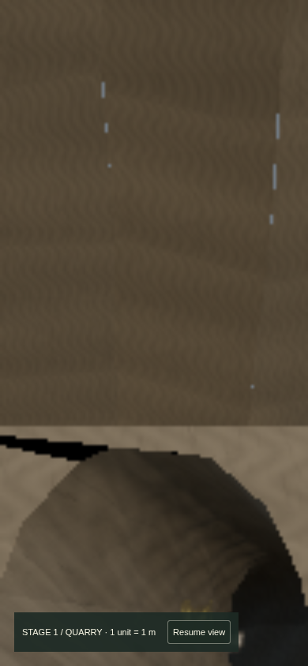
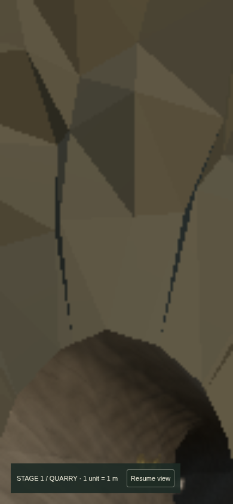
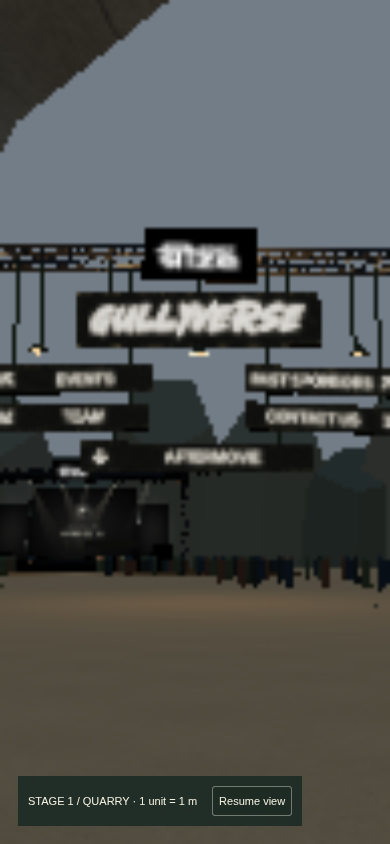
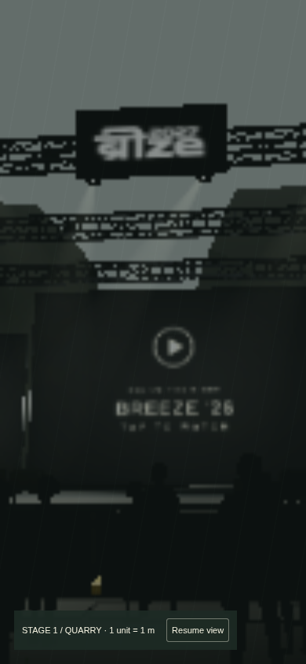
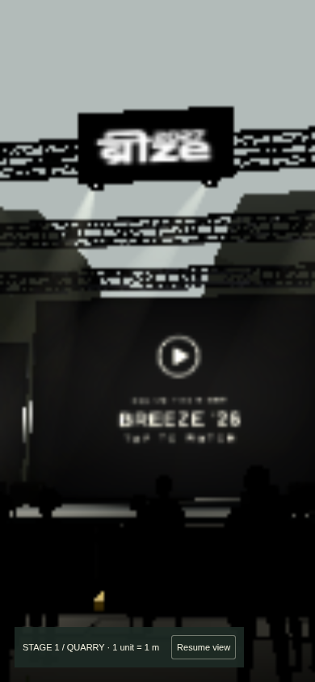
Fresh Enter → tunnel → hub → walk beneath scaffold → Aftermovie → drag to look back → aerial map.
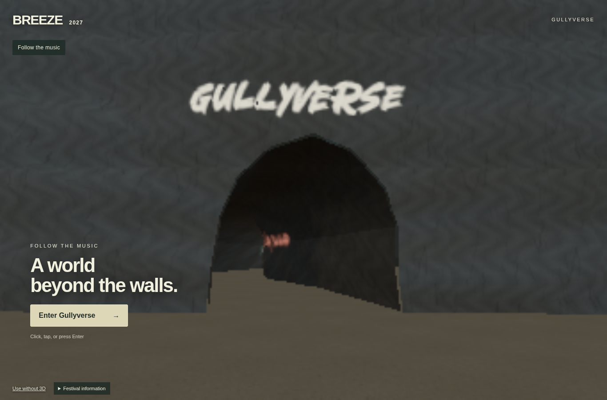
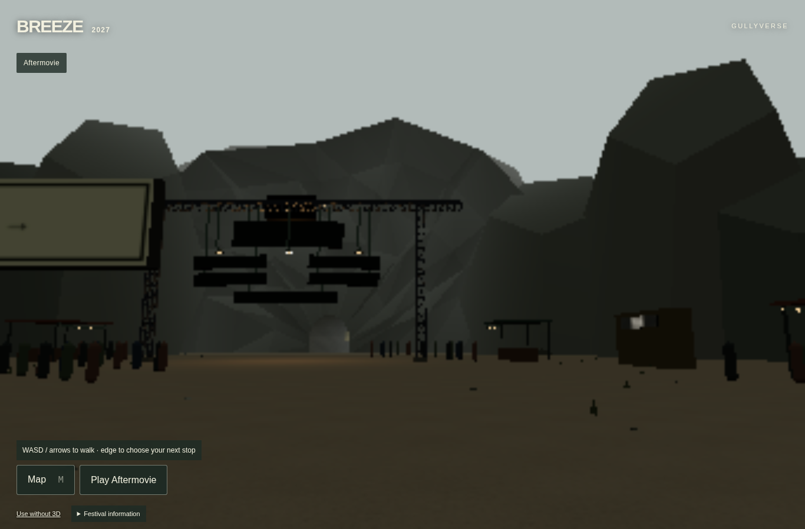
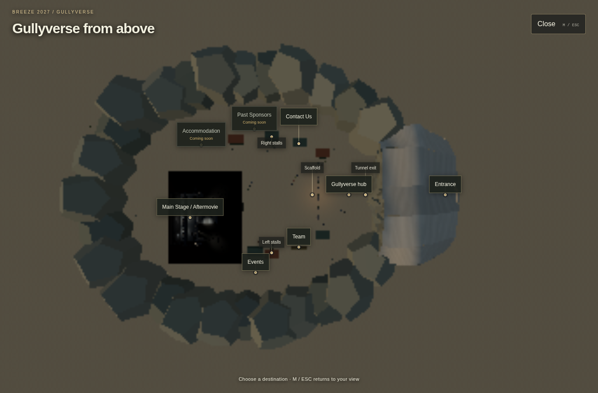